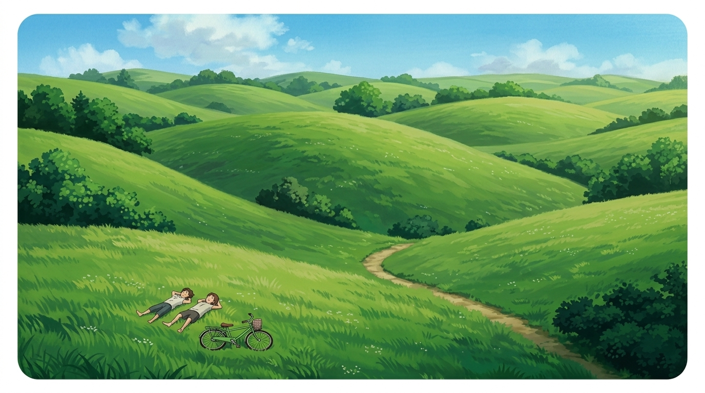

Menghadirkan lingkungan belajar yang asri, hangat, dan ramah anak di SDN 2 Ngeposari, Semanu, Gunungkidul. Membimbing nalar budi, kemandirian, dan karakter Pancasila generasi masa depan.
Akses cepat mengenai profil sekolah, fasilitas prasarana, agenda kegiatan siswa, dan kontak resmi kami.
Mengenal sejarah, visi, misi, dan nilai-nilai utama sekolah kami.
Lihat ruang belajar, laboratorium, dan fasilitas yang tersedia.
Temukan agenda kegiatan, pramuka, dan aktivitas terbaru.
Alamat fisik, nomor telepon, email, dan lokasi sekolah.
Nilai dasar yang kami tanamkan harian untuk menciptakan generasi yang cerdas, sopan, dan berkarakter.
Pembiasaan membaca buku sebelum pelajaran dimulai untuk mengasah minat baca dan daya tangkap pengetahuan siswa.
Integrasi nilai-nilai gotong royong, kebhinekaan, dan kejujuran dalam setiap aktivitas pembelajaran Kurikulum Merdeka.
Lingkungan bebas perundungan (anti-bullying) dengan guru pendamping yang hangat, sabar, dan komunikatif.
Pembinaan kedisiplinan, kemandirian, kecintaan alam, dan kepemimpinan melalui regu Kepramukaan Penggalang.


Siswa-siswi antusias mengikuti kegiatan persami dan latihan tali temali di lapangan sekolah.
Baca selengkapnya →
Wadah ekspresi kreativitas siswa dalam memperingati hari kemerdekaan.
Baca selengkapnya →Kepercayaan dan kebanggaan keluarga wali siswa tumbuh bersama lingkungan sekolah kami.
"Guru-guru di SDN 2 Ngeposari sangat sabar dan penuh perhatian. Anak saya jadi lebih percaya diri, sopan, dan bersemangat berangkat sekolah setiap pagi."

"Fasilitas perpustakaan dan lab komputer sangat membantu anak-anak belajar teknologi secara sehat. Pembiasaan Pramuka-nya juga melatih kemandirian."

"Lingkungan sekolah yang bersih dan hijau membuat anak-anak merasa nyaman. Komunikasi sekolah dengan orang tua wali siswa juga terjalin sangat dekat."

Kami dengan senang hati membantu Anda menemukan informasi yang dibutuhkan mengenai SDN 2 Ngeposari.
Hubungi Kami